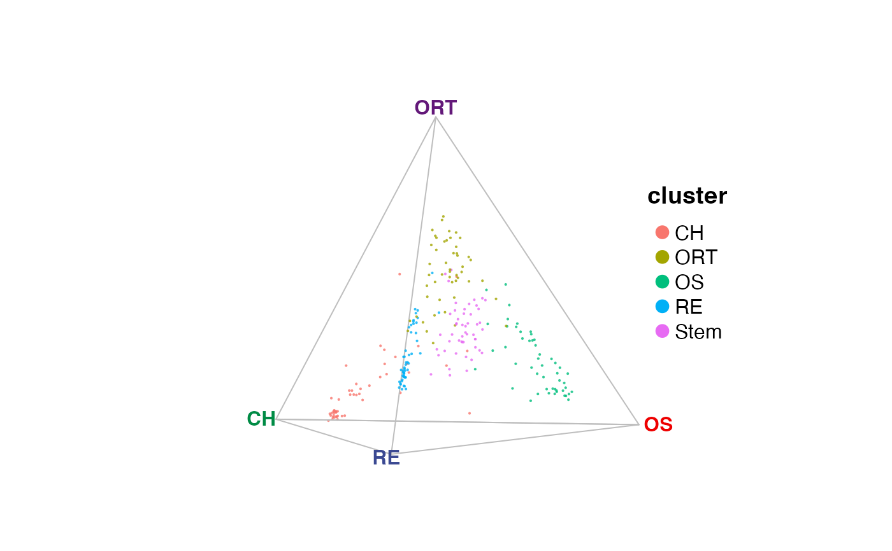
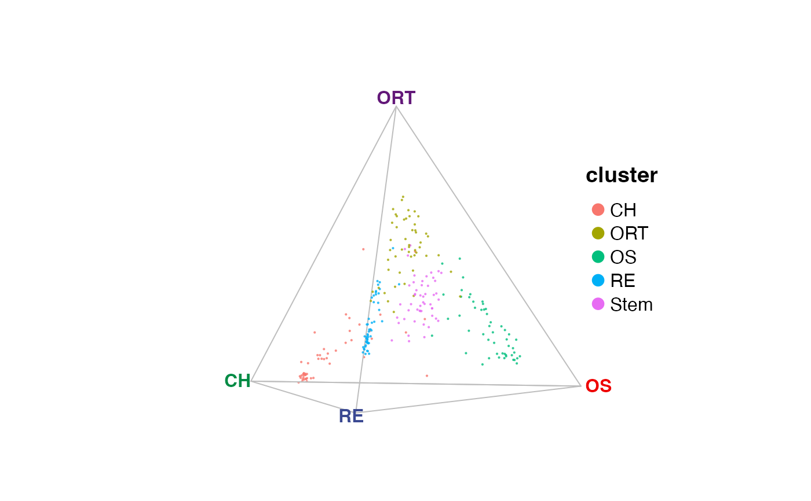

Show plist object produced with plot3D package
Usage
# S3 method for class 'quatPlot'
print(x, ...)Arguments
- x
quatPlot object, returned by
plotQuaternarywheninteractive = FALSE.- ...
Graphic parameters passed to
plot.maris pre-specified.
Value
No return value. It displays the plot described in a 'plist' object
returned by plotQuaternary, internally created by package
'plot3D'.
Examples
gene <- selectTopFeatures(
x = rnaRaw,
clusterVar = rnaCluster,
vertices = c("RE", "OS", "CH", "ORT")
)
#> Selected 30 features for "CH".
#> Selected 30 features for "ORT".
#> Selected 30 features for "OS".
#> Selected 30 features for "RE".
quat <- plotQuaternary(
x = rnaRaw,
clusterVar = rnaCluster,
vertices = c("RE", "OS", "CH", "ORT"),
features = gene,
interactive = FALSE
)
quat; print(quat)

